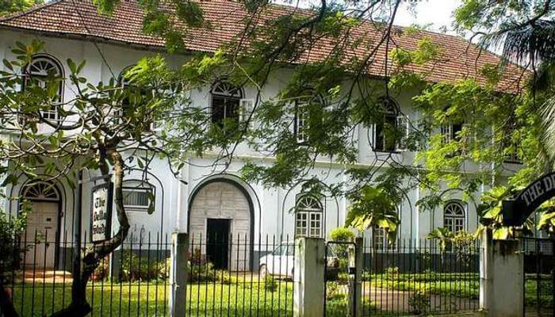
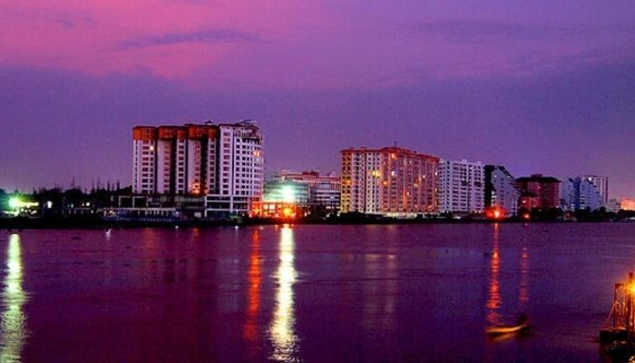
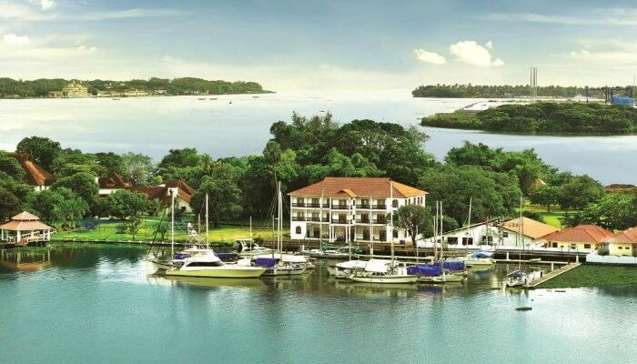

For those who wish to explore the real treasures of Kerala, here we go with the list of places to visit in Cochin. Beaches and backwaters, tea plantations and spice estates, hot steaming appams with stew and vibrant Kathakali performances – these and much more epitomize the God’s Own Country, Kerala on the global tourism map. However, Cochin stands out. Cochin has an altogether different signature – history and tradition woven together with modernization. The places to visit in Cochin, especially the best ones, are absolutely captivating, and sure to leave you with a bag full of beautiful memories and aspirations. Before starting with the list, let’s share a brief history of Kochi, previously and more popularly known as Cochin. It is an important port of south-west coast of India and was once a significant spice trading hub. If we go back to history, we see Greek, Roman, Portuguese, Arabic and Jewish settlements in Cochin for trade and commerce purposes.
Top Places To Visit In Ernakulam
Mattancherry Palace – Gape At Marvelous Architecture
Mattancherry Palace, located in Palace Road and built by the Portuguese as early as 1557, is considered to be one of the important places to visit in Cochin in 1 day. Popularly known as Dutch Palace, it has the style and architecture that resembles a typical traditional Kerala house with four individual wings and a patio in between. The place is known for offering the best experience of Cochin sightseeing. Don’t miss: Like every Kerala house, Mattancherry palace also has a courtyard in the center. The courtyard has a beautiful temple of Bhagavati, the protective deity of Kochi community. There are two other temples of Shiva and Krishna inside the palace. Also, the collection of frescos and paintings covering a large portion of the palace walls is worth seeing. However, don’t restrict to the interiors of the palace. Take in the beauty of its famous sprawling gardens and manicured lawns, that earned it a spot among the best tourist places in Kochi. Opening hours: 10 am to 5 pm. In between, the palace is closed from 1 pm to 2 pm for lunch. The Palace is closed on every Friday. Plan accordingly. Entry fee: INR 2 per head. Yeah, read again to believe.
Marine Drive – Stroll Around With Friends

Like most of them in the coastal areas, Marine Drive is among the most beautiful and romantic places to see in Kochi. Just watching the gamboling waves and the magnificent sunset will leave you mesmerized. After the sun goes down, you can go shopping in the nearby malls and call it a night after a romantic dinner date in one of the restaurants on Marine Drive. Don’t miss: Make sure to book a romantic dinner date in one of the cafes on Marine Drive. It will be worth it. Opening hours: Open 24 hours Entry fee: None
Bolgatty Palace And Island Resort – Magnificent Abode

What’s could be more romantic than snuggling with your better half in a magnificent heritage resort overlooking the vast expanse of backwaters of Laccadives Sea? The Bolgatty Palace & Island Resort features palatial rooms in this Dutch property, that dates back to 1744. Many of the top tourist attractions of Kochi like Mattancherry Palace and Marine Drive are within walking distance from the resort. Don’t miss: Spend days exploring these attractions, and dedicate evenings to Kochi backwaters tour Opening hours: Open 24 hours Entry fee: You need to book a stay Location: NH966A, Mulavukad, Kochi, Kerala 682504